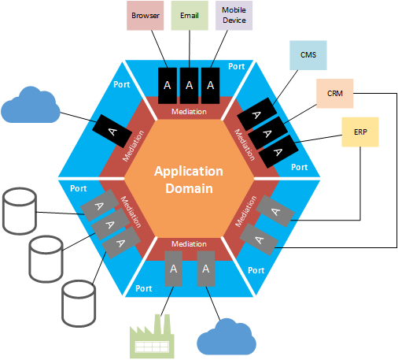
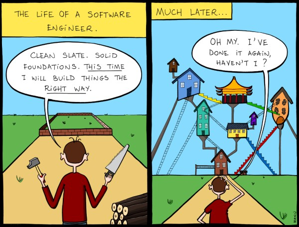

Modern architecture of web application
@KonradKokosa
Wprowadzenie
Google Rail


Było...


#01 Monolit
[ monolit ]

#02 N-tier
[ n-tier ]Big Ball of Mud
http://www.buddytv.com/survivor/season-25.aspxArchitektura:
- ograniczenia naszego umysłu
- zależności
- skalowalność
- ...
Jest...
#03 Hexagonal architecture
aka "Ports and adapters" lub "Onion architecture"
Będzie...?
Podsumowanie
Dobre intencje

OverengineeringBudujemy katedrę...

Evolutionary architecture
Jedno jest pewne - nastąpi zmiana
Same local images scaled down to demo sitting side by side
Let's dig in!Kontrakt
- przerwy - 10 minut
- telefon
- maile
- ...